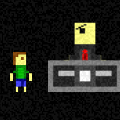

it me
I'd like to apologize for the lack of clever design and content currently. I set up a far more presentable version of this site in short time, and this is what is here.
I am an undergraduate student studying Computer Science at Stevens Institute of Technology, and I have a penchant for game design and programming. I particularly enjoy partaking in psychologically-driven party games and analysing the structure of competitive multiplayer environments. I also enjoy writing and creating original content, eating out in town on weekend nights, and I play the flute for two hours most Sunday with the on-campus concert band.
Below I've offered a number of choice selections from my endeavors in game design - from competition-created showstoppers to quirky side projects that may or may not be finished.
choice selections
Ricochet
DARPA's latest invention offers control over an exciting new world: the world of atomic particles. Challenge a wide selection of training boards in your quest to become a Qualified Operator for the Advanced Particle Manipulator.
Ricochet took home the Hardest Gameplay award at Games++ 2015, a ten-hour game jam hosted on Stevens grounds. The theme for the event was "Capture". Since its initial showcasing, Ricochet has been graduated to a longer-term project and given bugfixes/quality improvements, and will be given many more levels in the coming days. This updated version of the game (as of 3/29/15) was featured at the annual Castle Point Anime Convention (CPAC), another event held on university grounds.
Download (v1.2) | Download (v1.0) | games++ Official Website
Elemental Affinity
A one-off joke game of sorts, Elemental Affinity was cobbled together in a mere 48 hours for an on-campus game jam hosted by the game development club. The theme was "magic" - in Elemental Affinity, you can become attunted to four different forces of nature and use your magical powers to seek out the Ultimate Affinity. Noted for its hilariously difficult wall-jumping levels and surprisingly polished design, Elemental Affinity took first place in the contest. Not bad for a freshman student's first showing...
Trials of Hell
Edward Brown is excited to premier his new television show "Trials of Hell", but his live-action story of demons escaping from the fiery underworld has come under fire itself. Right before going live, the network executive demands Edward adjust the program for a more family-friendly audience, or face termination of air time. Without any other recourse, Edward has to direct his actors to avoid the on-set danger... while the show is being broadcast to a nation of millions.
Trials of Hell was entered into the Game Maker Community (GMC) Jam #11, a 72-hour online competition. The theme was "Monsters", with the handicap "Must contain no violence of any kind". Trials of Hell clinched a second-place position alongside fellow entrant House of Shadows. This particular victory was my first foray into an online game jam - and to come out so high right away is one of my proudest achievements. Since its initial release, Trials of Hell has recently received some bugfixes and a few visual adjustments.
A Crafty Escape
A prisoner on death row doesn't have much to do - especially when the prospect of escape is eliminated. Incarcerated on an island prison, your escape presents itself when the lights go out after being taken from your cell. Sneak around and scavenge parts to fight your way out of the penitentiary.
A Crafty Escape was an entrant into the GMC Jam #15. The theme was "Build and Use" and the handicap was "Your game cannot be a platformer". A Crafty Escape secured 17th place, and got one of three BEst Presentation awards. Although not one of my favorite games mechanically, A Crafty Escape showcases a lot of effort for a 72-hour game (including forays into things I never attempted in GM:Studio before) packaged into a memorable little experience.
RunGun
AP Computer Science brought about many challenges for those wishing to dive into the wonderful world of Java. In my case, experience tinkering with JavaScript made the process much easier. With my spare time, I worked on RunGun. Originally a derivative of similar joke game Walkpunch born from an IRC channel discussion, RunGun gives you a mysteriously strong homemade pistol and fourteen bullets. What happens next (and after that) (and probably after that) will leave you speechless.
RunGun's incredible difficulty, hilarious trial-and-error storytelling, two-button mechanics, and charm made it popular amongst my peers in my fledgling high school days. I will always fontly remember projects like these as the games that distracted people from doing their actual work - and sunk all their grades in the process. Truly incredible.